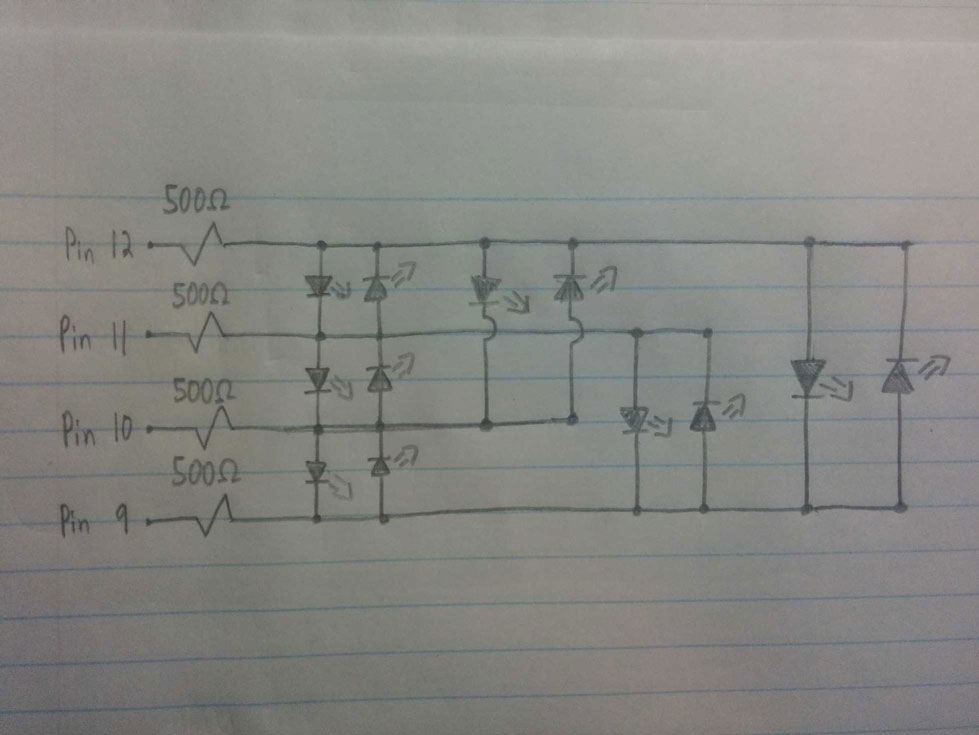
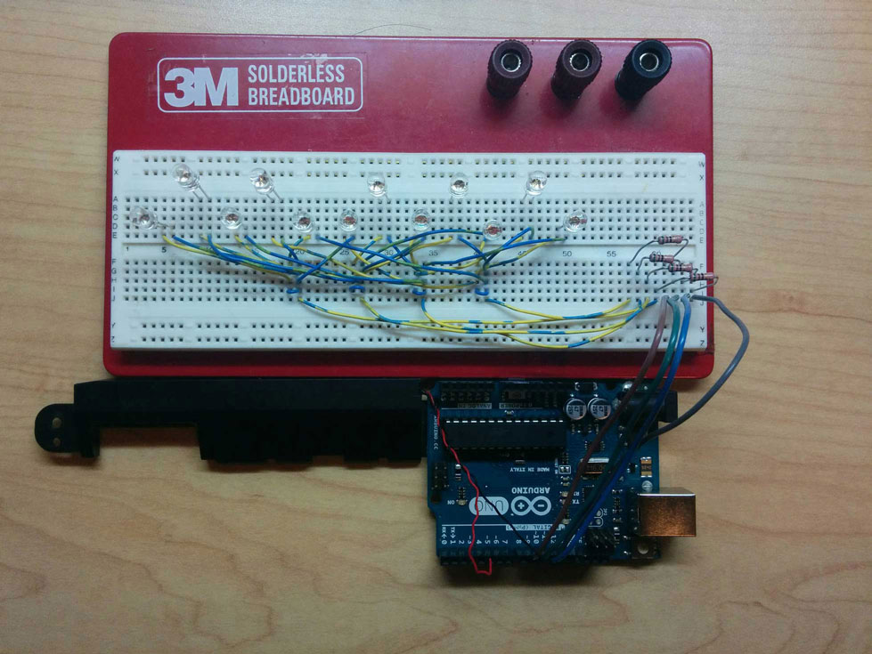

12 LEDs are arranged to represent an octave on a piano. As a sequence of frequencies (let's call it a "song") is played through a piezo speaker, the corresponding LED is lit.
Instead of using up one of the Arduino's digital I/O pins for each LED, Charlieplexing is used to reduce that number to 4 pins.
Fig1. - The Charlieplexed Circuit
 Fig2. - Charlieplex Schematic
 Fig3. - Completed Circuit